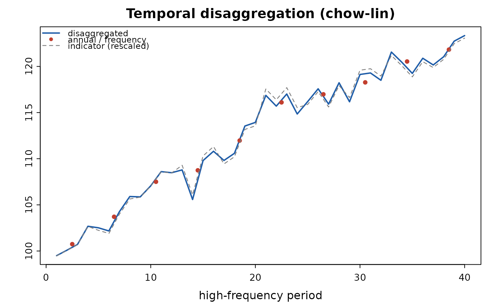

Turns annual series into quarterly ones consistent with the annual totals. Many of the economies these models are built for publish national accounts annually, so a quarterly projection model has to start by constructing quarterly GDP — usually from an indicator such as industrial production, imports or credit.
Arguments
- annual
Numeric vector of low-frequency values.
- indicator
Optional numeric vector of high-frequency indicator values, length
frequency * length(annual). Required for"chow-lin".- frequency
Periods per low-frequency observation (4 for annual-to-quarterly).
- method
"denton"or"chow-lin".- conversion
"sum"or"average".- rho
AR(1) coefficient for
"chow-lin".NULLestimates it by a grid search on the profile GLS likelihood. Note thatrhois identified only from the low-frequency residuals, so a short sample cannot pin it down: with ten annual observations the estimate is typically driven to zero even when the quarterly residual is strongly autocorrelated. Around thirty low-frequency observations are needed before the estimate is informative; supplyrhodirectly when the sample is shorter.- x
A
qpm_disaggregation.- ...
Unused.
Value
An object of class qpm_disaggregation: the high-frequency
series, the method used and the fitted parameters.
Details
Two standard methods:
"denton"— Denton-Cholette proportional first differences. Minimises the squared change in the ratio of the quarterly series to the indicator (or, without an indicator, in the series itself), subject to matching the annual figures. Purely a smoothing method: no regression, no parameters."chow-lin"— generalised least squares on the indicator with AR(1) quarterly residuals, distributing the annual residual across quarters. Uses the indicator's regression relationship, so it is the better choice when the indicator genuinely tracks the target.
Both enforce the aggregation constraint exactly: "sum" for flows
(annual GDP is the sum of quarters), "average" for stocks and index
levels.
Examples
# annual GDP with a quarterly indicator
set.seed(1)
q_true <- cumsum(rnorm(40, 0.5)) + 100
annual <- colSums(matrix(q_true, nrow = 4))
ind <- q_true + rnorm(40, 0, 1)
d <- qpm_disaggregate(annual, ind, method = "chow-lin")
d
#> <qpm_disaggregation> chow-lin, sum conversion
#> 10 low-frequency observations -> 40 high-frequency values
#> AR(1) rho = 0.00, beta = (-0.996, 1.008)
#> aggregation constraint holds to 5.68e-14
#> first values: 99.49, 100.09, 100.71, 102.68, 102.51, 102.17 ...
plot(d)
